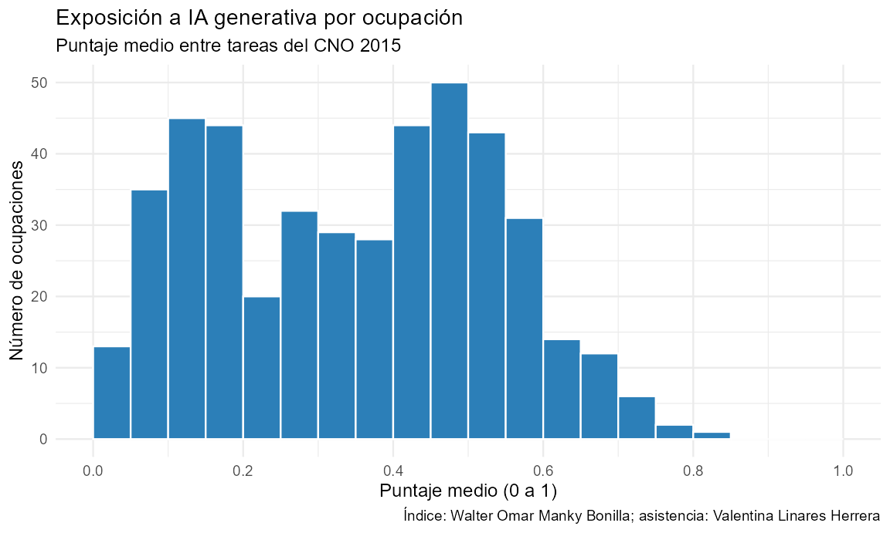

empleR reúne herramientas para trabajar en R con las encuestas de empleo del Perú. Permite descargar datos de la EPEN, interpretar códigos ocupacionales, calcular indicadores ponderados y explorar los resultados en mapas. Está pensado para estudiantes de pregrado y posgrado, docentes, investigadores y analistas que usan microdatos del INEI.
La primera versión cubre la EPE de Lima Metropolitana y la EPEN nacional. Complementa la documentación del INEI, no la reemplaza, y por ahora no busca abarcar encuestas de otros países.
¿Qué problema resuelve?
En 2022 no solo cambió el nombre de la encuesta. La EPE cubría Lima Metropolitana y clasificaba las ocupaciones con el CO-95; la EPEN tiene cobertura nacional y usa el CNO 2015. Por eso, si trabajas con años de ambas encuestas, conviene revisar cómo se corresponden sus códigos. empleR ayuda a documentar esas diferencias y a reconocer qué correspondencias pueden establecerse y cuáles siguen siendo ambiguas.
La documentación completa incluye ejemplos, resultados y una explicación de los cambios entre la EPE y la EPEN.
Instalación
pak::pak("valentinalinares/empleR")Un primer ejemplo
El paquete trae una muestra de 2.000 personas ocupadas de la EPEN 2024, así que puedes correr los ejemplos sin descargar archivos grandes.
library(empleR)
datos <- muestra_epen_2024 |>
cno() |>
ia_exposicion(score = "ambos", incluir_tipo = TRUE)
# Ingreso promedio por tipo de impacto de la IA
indicadores(datos, indicador = "ingreso_promedio", por = "ia_tipo")Sobre el índice de exposición a IA

El índice asigna a cada ocupación del CNO 2015 un puntaje continuo entre 0 y 1. Mide la exposición potencial de sus tareas a la IA, no la probabilidad de que ese empleo desaparezca. Con cobertura() puedes comprobar cuántos registros de tu base reciben un puntaje.
El índice fue desarrollado por Walter Omar Manky Bonilla, con asistencia de investigación de Valentina Linares Herrera. Es una actualización del estudio Doble desafío tecnológico, publicado por el INEI en 2025. La corrida incluida en el paquete se hizo en abril de 2026 con Claude Sonnet 4.6, y su paquete metodológico se versionó el 15 de junio de 2026. Los nuevos puntajes no deben atribuirse al INEI.
Funciones principales
| Función | Para qué sirve |
|---|---|
catalogo() |
Consulta las fuentes, años, variantes y periodos procesados por el proyecto. |
descargar() |
Descarga el módulo de empleo e ingresos de la EPEN y permite guardarlo en caché. Por ahora solo funciona con la EPEN. |
etiquetar() |
Añade categorías legibles a variables crudas o procesadas de la EPEN sin borrar sus códigos. |
cno() |
Describe ocupaciones del CNO 2015 y homologa el CO-95 sin forzar los casos ambiguos. Conserva los candidatos y el estado de cada correspondencia. |
ia_exposicion() |
Añade a cada ocupación su puntaje de exposición a IA. |
cobertura() |
Muestra cuántas observaciones, y cuánta población ponderada, tienen código, homologación y puntaje. |
indicadores() |
Calcula ingreso y horas ponderados. Los errores estándar todavía son provisionales. |
resumen_nacional() |
Consulta indicadores nacionales precalculados y documentados. |
mapa() |
Muestra indicadores agregados en mapas estáticos o interactivos. Se recomienda usarlo a nivel departamental. |
panel() está disponible como herramienta experimental para revisar viviendas u hogares que aparecen más de una vez. Por sí sola no identifica a la misma persona y no forma parte del uso recomendado en la primera versión estable.
Contexto y trabajo relacionado
empleR no es el primer paquete para microdatos del Perú. enaho descarga y combina la ENAHO y otras encuestas del INEI. En Argentina, eph es un antecedente valioso para trabajar con una encuesta continua de hogares de propósitos múltiples, con un fuerte componente de mercado laboral.
Lo propio de empleR es su foco en la EPE y la EPEN, y en el paso del CO-95 al CNO 2015. Mantiene visibles las correspondencias ambiguas y permite vincular las ocupaciones con un índice peruano de exposición a IA.
Qué conviene tener en cuenta
-
descargar()trabaja solo con la EPEN. Para trabajar con la EPE, necesitas contar con los archivos históricos. La ENAHO aparece encatalogo()como parte del inventario del proyecto, pero todavía no se puede descargar desde el paquete. -
etiquetar()cubre ocho conceptos documentados del módulo 76, entre ellos sexo, educación, condición de actividad, categoría ocupacional y área. Las demás variables crudas permanecen intactas hasta contar con un diccionario verificado. -
indicadores()produce estimaciones ponderadas y reconstruye el diseño muestral, así que sus errores estándar son reproducibles. Aún no se ha comprobado que reproduzcan los errores estándar publicados por el INEI. - La primera versión estable no incluye análisis longitudinales de personas ni encuestas de otros países.
Desarrollo
El proyecto usa pruebas automatizadas, R CMD check, lintr y pkgdown. Si quieres contribuir o reportar un problema, puedes abrir un issue en GitHub.